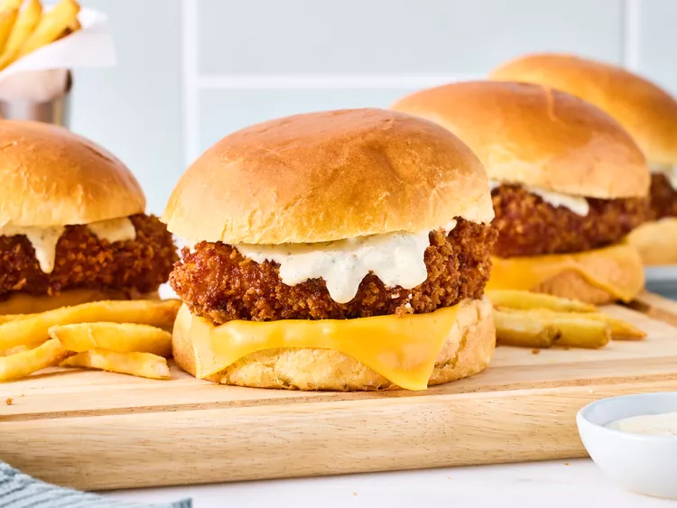

Filet-o-Fish Sandwich
Home

Description
Skip the drive-thru and make this one even better at home. If you love McDonald's Filet-o-Fish Sandwich as
much as we do, you have to try this copycat recipe that rivals any drive-thru version. As one taster from
our test kitchen, Liz Mervosh put it, "It's more than a copycat. It's better; more fish, more cheese, more
sauce. The contrast between the crispy breaded fish and the steamed bun is A+. Skip McDonald's and make your
sandwich."
A thick, fish filet is fried (and according to our test kitchen, gets even crispier than the McDonald's
version) and then stacked on a steamed bun with that signature tartar sauce. Here's how to make it.
Preperation
| Prep Time |
Cook Time |
| 20 mins |
10 mins |
|
Total Time: |
Servings: |
| 30 mins |
4 (serving size: 1 sandwich [1 bun, 1 fillet, 2 Tbsp. tartar sauce, 1 slice cheese) |
|
| Yield: |
| 1 9x13-inch casserole |
Ingredients
- canola oil, for frying
- 4 (4-ounce) skinless cod fillets (about 4- x 4-inch large and 1-inch thick)
- 1 teaspoon kosher salt, divided
- 1 large egg
- 1 tablespoon mayonnaise
- 1 tablespoon Dijon mustard
- 1 tablespoon corn starch
- 1 tablespoon all-purpose flour
- 1/4 teaspoon paprika
- 2 cups panko (Japanese-style breadcrumbs)
- 4 brioche hamburger buns, split
- 4 (1/2-ounce each) processed American cheese slices
- 2 teaspoons tap water
- McDonald's Tartar Sauce
- cooked shoestring fries, for serving
Directions
Step 1
Gather all ingredients. Pour oil to a depth of 2 inches in a large Dutch oven; heat oil over medium-high to 360
degrees F (182 degrees C). Preheat oven to 200 degrees F (93 degrees C). Set a wire rack inside a large rimmed
baking sheet; set aside.
Step 2
While oil heats, pat fillets dry with paper towels, and sprinkle evenly with 1/2 teaspoon of the salt. Whisk
together egg, mayonnaise, Dijon mustard, corn starch, flour, paprika, and remaining 1/2 teaspoon salt in a
medium
shallow bowl until combined. Place panko in another shallow bowl. Working with one fillet at a time, dip into
egg
mixture, flipping to coat all sides and letting excess drip off. Place in bowl with panko, and coat all sides.
Place
on a large plate; repeat with remaining fillets.
Step 3
Gently add 2 fillets to hot oil; fry, gently stirring and flipping fillets in oil occasionally, until golden
brown
and crispy, 3 to 5 minutes. Remove fillets from oil using a slotted spoon, and place on prepared wire rack.
Place in
preheated oven to keep warm while repeating frying process with remaining 2 fillets.
Step 4
Working with 2 buns at a time, place bottom buns on a large microwavable plate; top each bun with 1 cheese
slice.
Lightly sprinkle a small paper towel with water, and place in small microwavable bowl with bottom buns. Cover
plate
with an inverted microwavable glass bowl. Microwave on HIGH until buns are steamy and cheese is melted, 15 to 20
seconds. Carefully remove buns from plate; place top buns on the same plate and microwave on HIGH for 10 to 15
seconds.
Step 5
Immediately top bottom buns with a fish fillet and drizzle 2 tablespoons McDonald’s Tartar Sauce on top. Cover
with
top buns and serve immediately with shoestring fries. Repeat with remaining buns and fish fillets.
Nutrition Facts (per serving)
766
Calories
25g
Fat
87g
Carbs
45g
Protein